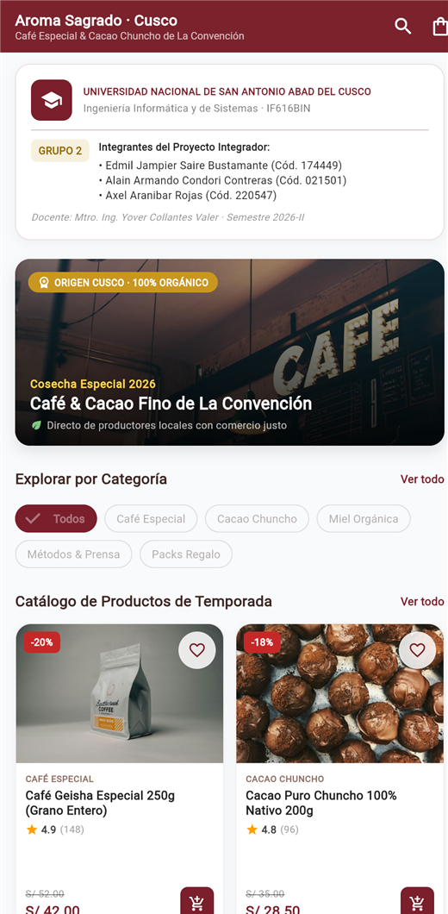
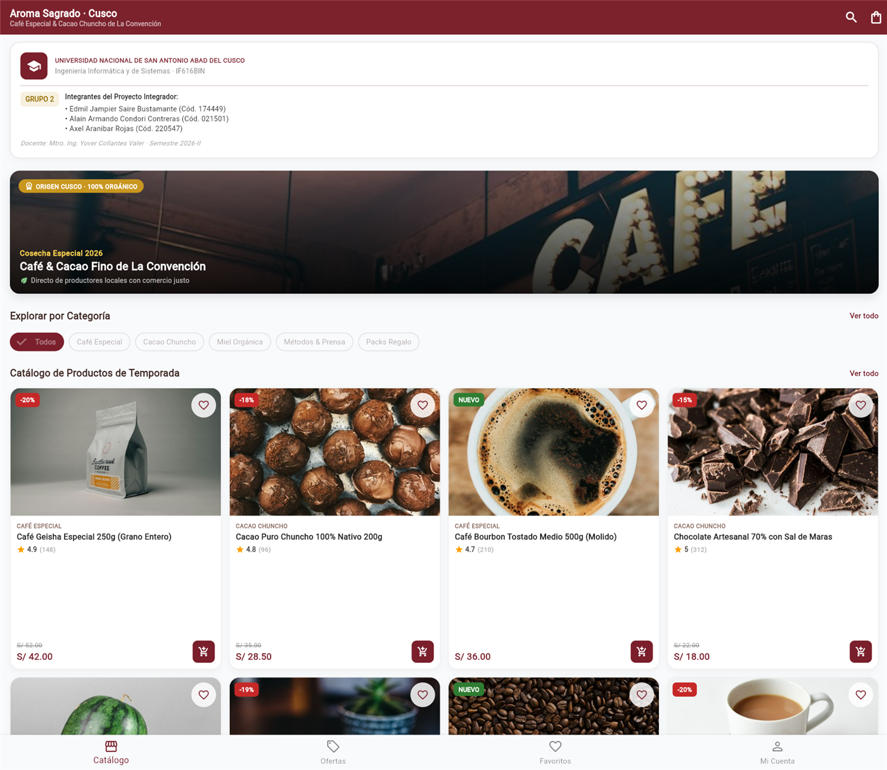

| Asignatura | Desarrollo de Software II — IF616BIN |
| Unidad | Unidad I · Fundamentos de Dart, UI declarativa y UX |
| Proyecto | Catálogo de productos «Aroma Sagrado» (café y cacao de La Convención) |
| Integrantes (Grupo 2) |
Edmil Jampier Saire Bustamante — Cód. 174449 Alain Armando Condori Contreras — Cód. 021501 Axel Aranibar Rojas — Cód. 220547 |
| Docente | Mtro. Ing. Yover Collantes Valer |
| Semestre | 2026-II |
| Fecha de entrega | 21 de octubre de 2026 · Cusco, Perú |
| Repositorio | https://github.com/Alacops/app_catalogo_grupo2 |
El presente proyecto consiste en el desarrollo de la interfaz de usuario (UI) de un catálogo digital para «Aroma Sagrado», un emprendimiento cusqueño dedicado a la comercialización de café especial, cacao chuncho, miel orgánica y accesorios de preparación provenientes de los valles de La Convención (Santa Teresa, Echarati, Quillabamba y Ocobamba). La aplicación presenta productos de temporada, categorías, ofertas y una sección de recomendaciones, construida íntegramente con el framework Flutter y el lenguaje Dart.
Presentar la información comercial de forma atractiva, jerárquica y legible, facilitando al usuario la exploración por categorías y la comparación de productos (precio, descuento, calificación y origen), con una experiencia que se adapte sin errores a pantallas de teléfono, tableta y escritorio.
De manera específica, la interfaz busca:
overflow).StatelessWidget. No incluye lógica de negocio, gestión de estado (setState, providers), navegación entre pantallas, ni persistencia de datos. Los datos mostrados provienen de una lista constante en memoria (CatalogoData) y los controles interactivos (favoritos, carrito, filtros) están declarados sin manejadores funcionales, conforme al alcance de la Unidad I.
El código se organizó por responsabilidades, separando datos, modelos, pantallas y componentes reutilizables, aplicando el principio DRY (Don't Repeat Yourself):
lib/ ├── main.dart # Punto de entrada + MaterialApp (tema global) ├── models/ │ └── producto.dart # Modelo inmutable de datos (solo estáticos) ├── data/ │ └── catalogo_data.dart # Fuente de datos constante (productos y categorías) ├── screens/ │ └── catalogo_screen.dart # Pantalla principal (ensambla la UI) └── widgets/ # Componentes reutilizables (DRY) ├── cabecera_institucional.dart ├── banner_promocional.dart ├── filtro_categorias.dart ├── tarjeta_producto.dart ├── seccion_interesar.dart └── panel_emprendimiento_info.dart
Justificación: cada componente visual recurrente (tarjeta de producto, banner, filtros, cabecera) se extrajo a su propio StatelessWidget en /lib/widgets para favorecer la reutilización, la legibilidad y el mantenimiento. El modelo Producto se aísla en /lib/models y los datos de ejemplo en /lib/data, de modo que la capa de presentación no mezcla contenido con estructura.
Scaffold ├── appBar: AppBar │ ├── title: Column (nombre + eslogan) │ └── actions: IconButton × 2 # buscar, carrito (zona táctil ≥48×48) ├── body: SingleChildScrollView │ └── Column (crossAxisAlignment: stretch) │ ├── CabeceraInstitucional # Container → Row/Column (ficha del grupo) │ ├── BannerPromocional # ClipRRect → Stack(StackFit.expand) │ │ ├── Image.network (BoxFit.cover) │ │ ├── Positioned.fill → LinearGradient (contraste) │ │ ├── Positioned (badge de origen) │ │ └── Positioned (textos promocionales) │ ├── _seccion('Explorar por Categoría') │ ├── FiltroCategorias # Wrap → FilterChip[] (salto de línea fluido) │ ├── _seccion('Catálogo de Productos de Temporada') │ ├── LayoutBuilder # mide el ancho disponible │ │ └── GridView.builder → TarjetaProducto[] │ ├── _seccion('También te puede interesar') │ ├── SeccionInteresar # ListView horizontal │ └── PanelEmprendimientoInfo # Container marrón (sellos de compromiso) └── bottomNavigationBar: BottomNavigationBar (4 ítems)
¿Por qué esta estructura? Se eligió Column para la disposición vertical general de la pantalla y SingleChildScrollView para permitir desplazamiento cuando el contenido excede el alto del dispositivo. Dentro, cada bloque es un widget independiente; los filtros usan Wrap porque su número de etiquetas es variable y debe reacomodarse por filas, mientras que la rejilla de productos usa LayoutBuilder + GridView para decidir el número de columnas según el ancho real.
La interfaz emplea de forma pertinente el repertorio de widgets estudiado en la unidad:
maxLines: 2 y overflow: TextOverflow.ellipsis para que ningún título rompa la tarjeta (tarjeta_producto.dart).Image.network con fit: BoxFit.cover para que la foto cubra el área sin deformarse, y un errorBuilder que muestra un ícono de café cuando la imagen no carga (evita cajas rotas).semanticLabel: 'Agregar a favoritos' y los IconButton de la barra superior definen tooltip.margin separa las tarjetas y bloques entre sí (p. ej. EdgeInsets.symmetric(horizontal:16, vertical:8) del banner), mientras que el padding separa el contenido de su propio borde (p. ej. EdgeInsets.all(10) dentro de la tarjeta).BoxDecoration para color, borderRadius (16 pt) y boxShadow; respetando la regla de que el color va dentro de BoxDecoration y no en el parámetro color del Container para evitar el conflicto de asertación.// tarjeta_producto.dart — reparto proporcional de la tarjeta Column(children:[ Expanded(flex: 5, child: /* imagen con Stack */ ), // 5/11 del alto Expanded(flex: 6, child: /* info + precio + botón */ ), // 6/11 del alto ])
Se usó Expanded con flex para repartir el alto de la tarjeta entre imagen (5) e información (6). En la fila de categoría/origen, el texto se envuelve en Expanded para que ocupe el espacio restante y se trunque con ellipsis si es necesario. Los alineamientos mainAxisAlignment: spaceBetween y crossAxisAlignment: end fijan el precio a la izquierda y el botón de compra a la derecha, anclados a la base.
// banner_promocional.dart — superposición para legibilidad
Stack(fit: StackFit.expand, children:[
Image.network(..., fit: BoxFit.cover),
Positioned.fill(child: DecoratedBox(
decoration: BoxDecoration(gradient: LinearGradient(
begin: Alignment.topCenter, end: Alignment.bottomCenter,
colors:[ Colors.black.withValues(alpha:0.15),
Colors.black.withValues(alpha:0.85) ]))),
),
Positioned(top:14,left:14, child: /* badge ORIGEN CUSCO */ ),
Positioned(left:16,right:16,bottom:14, child: /* títulos */ ),
])
filtro_categorias.dart dispone los FilterChip con spacing: 8 y runSpacing: 8, de modo que las categorías saltan de línea de forma fluida sin desbordamiento horizontal cuando no caben.// catalogo_screen.dart — número de columnas según el ancho medido LayoutBuilder(builder: (context, constraints) { final int crossAxisCount; final double childAspectRatio; if (constraints.maxWidth < 600) { // Teléfono crossAxisCount = 2; childAspectRatio = 0.68; } else if (constraints.maxWidth < 840) { // Tableta crossAxisCount = 3; childAspectRatio = 0.72; } else { // Escritorio crossAxisCount = 4; childAspectRatio = 0.75; } return GridView.builder( ... ); })
| Dispositivo | Ancho disponible | Columnas | childAspectRatio |
|---|---|---|---|
| 📱 Teléfono | < 600 pt | 2 | 0.68 |
| 📟 Tableta | 600 – 839 pt | 3 | 0.72 |
| 🖥️ Escritorio | ≥ 840 pt | 4 | 0.75 |
LayoutBuilder (local) vs. MediaQuery (global): se eligió LayoutBuilder porque entrega el ancho real del espacio asignado al widget (sus constraints), no el de toda la ventana. Esto hace que la rejilla sea reutilizable dentro de cualquier contenedor y no dependa del tamaño global de la pantalla.
RenderFlex overflowed: se evitó envolviendo textos variables en Expanded + TextOverflow.ellipsis y usando Wrap para los chips de categoría.GridView vive dentro de un SingleChildScrollView; para evitar el conflicto de alturas infinitas se configuró shrinkWrap: true y physics: NeverScrollableScrollPhysics(), delegando el scroll vertical al contenedor padre.SingleChildScrollView para permitir desplazamiento cuando el contenido excede el alto del dispositivo.flutter analyze (sin errores) y pruebas de layout a distintos anchos; no se observan desbordamientos (RenderFlex) ni franjas amarillo-negras del depurador en ninguno de los tres puntos de quiebre.IconButton de la AppBar y los ítems del BottomNavigationBar cumplen el mínimo de Material por defecto; el botón de favorito de la tarjeta se amplió explícitamente a un área de 48×48 dp (ícono visible de 40).alpha 0.15 → 0.85) bajo el texto blanco para asegurar lectura sobre la fotografía.#C62828 para descuentos, verde #2E7D32 para «NUEVO» y granate para el precio y las acciones principales.semanticLabel en íconos y tooltip en acciones, para soporte de lectores de pantalla.Las siguientes capturas se obtuvieron de la aplicación en ejecución (compilación web con los datos actualizados: curso IF616BIN y códigos del grupo), evidenciando el reflujo de columnas ante distintos anchos de pantalla con las fotografías reales de los productos.

Stack + LinearGradient) y los filtros en Wrap.
LayoutBuilder.La sección más sensible al cambio de tamaño es la rejilla de productos (GridView): al depender del childAspectRatio, una proporción mal calibrada puede comprimir la tarjeta y provocar overflow interno; por ello se ajustó un ratio distinto por punto de quiebre. En segundo lugar, la nube de filtros (Wrap) es frágil porque su número de líneas cambia según el ancho, aunque al estar diseñada con runSpacing absorbe el reflujo sin romperse.
| Dificultad | Causa | Solución aplicada |
|---|---|---|
GridView dentro de Column con error de altura infinita | Restricciones verticales no acotadas (unbounded) | shrinkWrap: true + NeverScrollableScrollPhysics |
| Texto blanco ilegible sobre fotos claras del banner | Bajo contraste imagen/tipografía | LinearGradient oscuro superpuesto con Positioned.fill |
| Títulos de producto largos rompían la tarjeta | Texto de longitud variable | maxLines: 2 + TextOverflow.ellipsis dentro de Expanded |
| Categorías desbordaban en una sola fila | Número variable de etiquetas | Wrap con spacing/runSpacing |
| Botón de favorito con zona táctil menor a 48 dp | Contenedor de 40×40 | Área táctil ampliada a 48×48 con semanticLabel |
Aprendizaje principal: el concepto más exigente fue el modelo de restricciones de Flutter («constraints go down, sizes go up»), clave para entender por qué un GridView necesita límites de altura y cómo Expanded reparte el espacio sin provocar desbordamientos.
Stack, Expanded, Wrap y GridView de forma segura.StatefulWidget/provider), navegación a detalle de producto y carga de imágenes locales (Image.asset) para el modo sin conexión.Anexo A — Código fuente. Proyecto completo en el repositorio: https://github.com/Alacops/app_catalogo_grupo2 · Carpeta local: Trabajo_Grupal_2/app_catalogo_grupo2.
| Criterio | Evidencia en el proyecto | Puntaje |
|---|---|---|
| Cobertura de widgets | Uso pertinente de contenido, Container, Row/Column, Expanded, Stack, Wrap, LayoutBuilder y GridView. |
4 / 4 |
| Dominio del layout | Sin desbordamientos ni tamaños infinitos; reparto de espacio intencional (flex 5/6, shrinkWrap). |
4 / 4 |
| Calidad de UI | Jerarquía visual clara, paleta coherente granate–dorado y escala tipográfica consistente. | 3 / 3 |
| Adaptabilidad | Reorganización correcta en 3 anchos con puntos de quiebre justificados (600 / 840 pt). | 3 / 3 |
| Accesibilidad y UX | Contraste suficiente, zonas táctiles 48×48, etiquetas semánticas y color no decorativo. | 2 / 2 |
| Organización del código | Widgets y métodos con nombres descriptivos, const donde corresponde y sin anidamiento excesivo. |
2 / 2 |
| Documentación y evidencias | Informe breve con árbol de widgets, fragmentos de código y capturas en dos anchos. | 2 / 2 |
| TOTAL | 20 / 20 | |
Universidad Nacional de San Antonio Abad del Cusco · Ingeniería Informática y de Sistemas · Desarrollo de Software II (IF616BIN) · Grupo 2 · 2026-II